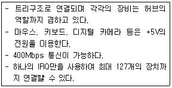

PC정비사-2급 (2018-10-21 기출문제)
1과목: PC유지보수
1. 시분할 시스템에 대한 설명이 아닌것은?
- CPU가 한 사용자로부터 다른 사용자로 빠르게 교환시켜 주는 시스템
- 많은 사용자가 동시에 사용할 때도 실제는 한 개의 컴퓨터를 사용하는 시스템
- 다중 프로그래밍 체제와 대화형 체제를 합친 방식의 시스템
- 많은 시간을 필요로 하는 처리 방식의 시스템
(정답률: 78%)

2. 다음 중 가상 메모리와 관련이 없는 것은?
- Page Fault
- Demand Paging
- Thrashing
- DMA
(정답률: 83%)
3. 두 개 이상의 프로세스를 동시에 처리할 수 없으므로, 프로세스에 대한 순서를 결정하는 것은?
- 상호 배제
- 임계 구역
- 동기화
- 시분할 처리
(정답률: 70%)
4. 인터럽트에 대한 설명으로 잘못된 것은?
- 사용자가 의도적으로 인터럽트를 발생 시킬 수 없다.
- 프로그램을 실행하는 도중 갑작스런 정전이 일어날 경우 발생한다.
- 입출력의 종료나 입출력의 오류에 의해 CPU의 기능이 요청되는 경우 발생한다.
- 프로그램 실행 중 보호된 기억공간 내에 접근한 경우 발생한다.
(정답률: 80%)
5. 새로 추가한 드라이버가 하드웨어와 맞지 않아 발생하는 문제를 복구하기 위하여 마지막으로 성공한 구성을 선택하여 부팅한 경우 복원되는 레지스트리 키는?
- HKEY_LOCAL_MACHINESOFTWAREMicrosoft
- HKEY_LOCAL_MACHINESystemCurrentControlSet
- HKEY_LOCAL_MACHINEHARDWAREACPI
- HKEY_CURRENT_CONFIGSoftwareMicrosoft
(정답률: 78%)
6. 에러를 자신이 찾아 수정할 수 있는 코드는?
- 패리티 코드(Parity Code)
- 해밍 코드(Hamming Code)
- 그레이 코드(Gray Code)
- BCD코드(Binary Coded Decimal)
(정답률: 88%)
7. 다음 중 운영체제에 속하지 않는 것은?
- Window XP
- Window Server 2008 r2
- OS/2
- PL/I
(정답률: 80%)
8. 운영체제가 실행하는 일에 대한 설명 중 잘못된 것은?
- 폴더를 생성하고 체계적으로 관리할 수 있도록 도와준다.
- 하드디스크 관리와 파일관리를 도와준다.
- 각종 하드웨어를 진단하고 관리할 수 있도록 해준다.
- 컴퓨터의 성능을 떨어뜨린다.
(정답률: 91%)
9. 레지스트리를 편집할 때의 주의 사항으로 볼 수 없는 것은?
- 편집하기 전에 레지스트리를 백업한다.
- 필요 없는 키를 삭제하기 전에 삭제할 키를 저장한다.
- 레지스트리를 편집할 때 레지스트리 편집기에서 내용을 수정하면 바뀐 내용이 곧바로 저장됨을 주의 한다.
- 새로운 레지스트리 키 생성 시, 키의 이름은 대소문자를 구분하므로 반드시 주의하여 입력한다.
(정답률: 78%)
10. 미국의 Bell 연구소에서 만든 운영체제로 멀티태스킹과 멀티프로그램이 가능하며, 주로 중대형 서버에 사용되는 운영체제는?
- MAC
- Windows 7
- Oracle
- Unix
(정답률: 79%)
11. Windows 7 Professional의 제어판에서 할 수 없는 작업은?
- 국가 및 언어 설정
- 성능 정보 및 도구 설정
- 색인 옵션 설정
- 시작 프로그램 설정
(정답률: 78%)
12. 다음 나열된 것 중 컴퓨터용 운영체제가 아닌 것은?
- UNIX
- LINUX
- Windows
- Open Source
(정답률: 85%)
13. 운영체제에서 기억장치를 관리하기 위한 전략 중 배치 전략에 해당되지 않는 기법은?
- 요구 반입 (Demand Fetch) 기법
- 최초 적합 (First Fit) 기법
- 최적 적합 (Best Fit) 기법
- 최악 적합 (Worst Fit) 기법
(정답률: 87%)
14. 디스크 조각 모음에 대한 설명으로 잘못된 것은?
- 분산되어 저장된 하나의 큰 파일을 연속 공간에 배치시킨다.
- 조각 모음을 통해 잘못 설치되어 있는 장치의 드라이버 파일을 수정할 수 있다.
- 디스크 공간을 최적화시킨다.
- 디스크의 접근 속도를 향상시킨다.
(정답률: 78%)
15. 여러 개의 작업을 하나로 묶어 일정시점에 이 작업들을한꺼번에 처리하는 운영체제 방식은?
- Job by Job 방식
- 실시간 시스템 방식
- 일괄처리방식
- 다중 프로그래밍 방식
(정답률: 91%)
2과목: PC운영체제
16. ECC SDRAM은 몇 Bit의 대역을 가지는가?
- 32 Bit
- 64 Bit
- 72 Bit
- 128 Bit
(정답률: 72%)
17. 하드디스크에 대한 설명 중 틀린 것은?
- FAT 파일 시스템은 포맷없이 커맨드 창에서 NTFS로 변경할 수 있다.
- NTFS 파일 시스템은 포맷없이 커맨드 창에서 FAT로 변경할 수 있다.
- 파티션 설정시 주 파티션은 최대 4개까지 만들 수 있다.
- 확장 파티션에 만들어진 논리 드라이브는 무제한으로 만들 수 있다.
(정답률: 73%)
18. 메인보드의 구성 요소와 거리가 먼 것은?
- ODD 커넥터
- VRAM
- 바이오스
- 배터리
(정답률: 66%)
19. 사운드카드가 음을 만들기 위해 사용하는 방법이 아닌 것은?
- PCM 방식
- FM 방식
- AM 방식
- Wavetable 방식
(정답률: 70%)
20. 3벌식 자판에 대한 설명 중 잘못된 것은?
- 현재 국가 표준으로 공인되어 있다.
- 한글 구현 원리를 충실히 따르고 있다.
- 2벌식에 비해 왼손이 덜 피로하다.
- 현대어에서 사용하는 모든 겹받침은 키를 누른 상태에서 1타에 입력할 수 있다.
(정답률: 79%)
21. 다음 중 하드웨어의 상태를 점검하고 환경을 저장하는 역할을 하는 것은?
- I/O 칩셋
- PCI 칩셋
- 메인보드 칩셋
- BIOS
(정답률: 80%)
22. 다음에서 설명하는 장치는?

- PS/2
- USB 2.0
- IDE
- AMR Modem
(정답률: 80%)
23. 레이저 프린터의 인쇄 속도를 나타내는 단위는?
- KPS
- PPM
- BPS
- CPI
(정답률: 80%)
24. 하드디스크를 구성하고 있는 물리적 요소로 잘못된 것은?
- FAT
- Head
- Spindle Motor
- Platter
(정답률: 74%)
25. 그래픽 카드에 대한 설명으로 잘못된 것은?
- 그래픽 카드에서 CPU 역할을 하는 것은 GPU이다.
- 그래픽 카드는 대부분 그래픽 데이터 처리를 위한 별도의 메모리가 장착되어 있다.
- CPU와 마찬가지로 오버클럭킹이 가능할 수도 있다.
- AGP 인터페이스의 대역폭이 PCI-Express 인터페이스의 대역폭보다 크다.
(정답률: 75%)
26. 마우스의 1인치당 포인트 이동 픽셀 단위는?
- DPI
- ppm
- mm
- inch
(정답률: 86%)
27. 키보드의 인터페이스로 잘못된 것은?
- AT
- PS/2
- USB
- DMA
(정답률: 68%)
28. HDD의 분당 회전수를 나타내는 단위는?
- RPM
- PPM
- BPS
- CPS
(정답률: 85%)
29. 마우스의 동작원리에 대한 설명 중 잘못된 것은?
- 볼 마우스 : 공을 굴려서 공의 이동거리와 방향을 감지한다.
- 광 마우스 : 빛을 쏘아서 반사된 빛을 센서로 감지한 후 이동거리를 측정한다.
- 전자펜 마우스 : 펜 끝을 깔판에 대면 깔판 밑에 배열된 전자장치가 펜의 위치를 판독한다.
- 터치 패드 : 공을 손으로 직접 굴림으로써 공의 이동 거리를 감지한다.
(정답률: 87%)
30. 레이저 프린터 사용 시 이면지가 잘 걸리는 이유로 부적절한 것은?
- 레이저 프린터의 원리상 종이가 전하를 띠기 때문이다.
- 드럼에 생성된 양전하가 남아 있기 때문이다.
- 이면지를 사용할 경우 전에 출력했던 면이 다시 녹으면서 롤러에 달라붙기 때문이다.
- 프린터 내부 롤러가 새 제품이기 때문이다.
(정답률: 83%)
3과목: PC주변기기
31. 하드디스크가 Active 상태로 설정되지 않았을 경우,나타나는 메시지는?
- Device overflow
- Hard disk diagnosis fail
- No ROM Basic system halted
- Error initializing hard drive controller
(정답률: 74%)
32. 메인보드의 각종 입출력 단자를 케이스 바깥과 연결하기 위해 사용하는 것은?
- 백 패널(Back Panel)
- 스페이서(Spacer)
- 서플라이(Supply)
- 커넥터(Connector)
(정답률: 82%)
33. 파티션에 대한 설명 중 잘못된 것은?
- 리눅스 파티션은 최대 4개까지 나눌 수 있다.
- 윈도우 파티션의 크기는 MB 단위로 입력할 수 있다.
- 파티션의 크기는 전체 하드디스크의 %로 지정할 수 있다.
- 파티션을 나눈 후, 포맷을 해야 사용할 수 있다.
(정답률: 66%)
34. 하드디스크 부트 섹터(Boot Sector)에 쓰기가 되지 않도록 하는 BIOS 설정 항목은?
- IDE HDD Block Mode Sectors
- Virus Warning
- Typematic Rate Setting
- Boot up System Speed
(정답률: 63%)
35. 시스템의 부팅 속도가 느려지는 원인으로 잘못된 것은?
- 램(RAM)에 기록된 파일의 단편화 심화
- 하드디스크 파일의 단편화 심화
- CMOS Setup에서의 Cache가 disable로 설정
- 바이러스 감염
(정답률: 71%)
36. 로우레벨 포맷에 대한 설명으로 잘못된 것은?
- 물리적인 상태는 그대로 둔 채 논리적인 포맷만을 하므로 시간이 짧게 걸린다.
- 백신 프로그램이나 포맷으로도 바이러스가 잡히지 않을 경우 진행한다.
- BIOS 설정에 로우레벨 포맷 기능이 있는 경우, 그것으로 수행하거나 별도의 프로그램을 이용한다.
- 로우레벨 포맷을 통해 디스크의 배드 섹터와 같은 물리적 결함은 복구되지 않을 수도 있다.
(정답률: 73%)
37. 시스템의 성능 평가와 가장 관계가 적은 것은?
- 프로그램 크기 (Program Size)
- 신뢰도 (Reliability)
- 경과 시간 (Turn-around Time)
- 사용 가능도 (Availability)
(정답률: 71%)
38. 컴퓨터 부팅 시 'Press ＜F1＞ to continue' 라는 메시지가 나오는 원인은?
- 캐쉬 메모리 불량
- 키보드와 마우스 연결 불량
- CMOS의 그래픽 카드 설정오류
- ROM BIOS 고장
(정답률: 82%)
39. PC에서 컴퓨터 바이오스와 운영체제에 PnP 장치들과의 통신을 위한 정보를 제공하는 데이터는?
- ESCD(Extended System Configuration Data)
- NVRAM(Non-Volatile RAM)
- DMA
- CMOS ROM
(정답률: 64%)
40. PC 조립에 대한 설명 중 잘못된 것은?
- Power Supply는 큰 냉각팬이 돌아가기 때문에 단단히 고정하지 않으면 냉각팬 돌아가는 소리가 크게 들린다.
- 메인보드의 Power S/W와 Reset S/W는 극성이 없으므로 연결커넥터는 사용자가 마음대로 연결해도 무방하다.
- 시리얼 ATA 방식의 하드디스크를 연결할 때는 점퍼 설정을 해야 한다.
- CPU나 하드디스크는 동작 중 많은 열이 발생하므로, 본체의 통풍이 원활하도록 조립한다.
(정답률: 59%)
41. Plug and Play 기능에 대한 설명으로 잘못된 것은?
- PnP를 지원하지 않는 장치의 리소스는 Windows의 장치관리자에서 확인할 수 있으나, PnP를 지원하는 장치의 리소스는 확인할 수가 없다.
- PnP 기능을 사용하기 위해서는 하드웨어와 소프트웨어가 모두 PnP 기능을 지원해야 한다.
- 주변기기를 연결할 때 사용자가 직접 환경 설정을 하지 않아도 된다.
- '장치관리자'에서 '알 수 없는 장치'로 나타나는 것은 PnP에 의해 인식된 장치가 올바른 드라이버를 사용할 수 없는 경우이다.
(정답률: 71%)
42. Boot.ini 옵션 중 안전모드로 부팅하는 옵션값은?
- /BOOTLOG
- /SAFEBOOT
- /BASEVIDEO
- /NOGUIBOOT
(정답률: 81%)
43. 시스템 업그레이드를 위한 준비사항으로 잘못된 것은?
- OS 설치용 CD를 준비하고 부품의 드라이버를 준비한다.
- CPU나 램의 업그레이드시 가장 최고성능의 최신 부품을 구입한다.
- 하드디스크의 중요 자료를 백업해 둔다.
- 현재 보유하고 있는 시스템을 분석하여 가능한 제품을 업그레이드한다.
(정답률: 76%)
44. “CPU의 원래 속도 보다 더 높게 클록을 설정하여 사용하는것”을 뜻하는 것은?
- 오버클로킹
- 스풀링
- 쿨링팬
- 과전압
(정답률: 92%)
45. 전자파와 VDT(Video Display Terminal) 증후군에 대한 설명으로 잘못된 것은?
- 전자파는 컴퓨터에서만 발생한다.
- 시각 장애는 조명 불량, 화면의 반짝거림 등이 원인이다.
- 부적절한 작업 자세로 인하여 목, 어깨, 팔 등의 통증이 유발된다.
- 전자파나 정전기로 인한 두통, 목디스크 등이 유발될 수 있다.
(정답률: 84%)
4과목: PC네트워크
46. 라우터(Router)가 동작하는 OSI 7 Layer는?
- 물리 계층
- 전송 계층
- 데이터 링크 계층
- 네트워크 계층
(정답률: 74%)
47. 유동 IP와 고정 IP에 대한 설명으로 잘못된 것은?
- ADSL이나 케이블 모뎀을 사용하는 초고속 인터넷 환경에서는 기본적으로 유동 IP가 부여된다.
- 유동 IP는 DHCP 방식에 의해 제공된다.
- 고정 IP는 웹서버 IP 주소로 사용할 수 없다.
- 유동 IP에서도 VPN 장비를 연결하면 사설 네트워크를 구성할 수 있다.
(정답률: 75%)
48. 라우터의 기능에 대한 설명 중 잘못된 것은?
- 인터넷을 할 때 최적의 경로를 지정해주는 역할을 한다.
- 특정 네트워크 포트의 통신을 차단하거나 허용할 수 있다.
- NAT 기능을 이용하면 사설 IP 주소로 외부 네트워크와의 통신이 가능하다.
- 인터넷 주소를 3개의 마침표로 구분된 숫자의 주소로 전환하는 역할을 한다.
(정답률: 67%)
49. 네트워크의 보안과 거리가 가장 먼 것은?
- 방화벽
- AVR
- 공개키
- 개인키
(정답률: 70%)
50. WWW(World Wide Web)를 사용하기 위한 프로토콜은?
- Apple Talk
- MAC
- HTTP
- RIP
(정답률: 86%)